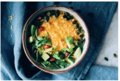

Mijo Cremoso con Lentejas y Shiitake
25 noviembre, 2024
Este mijo cremoso se combina a la perfección con las lentejas y el toque umami de los shiitake.
Ingredientes
- 200 gramos de mijo
- 100 gramos de lentejas cocidas
- 150 gramos de setas shiitake
- 1 cebolla mediana, picada
- 2 dientes de ajo, picados
- 500 ml de caldo de verduras
- 2 cucharadas de aceite de oliva
- Sal y pimienta al gusto
Tiempo de Preparación
Tiempo total: 40 minutos
Preparación: 10 minutos | Cocción: 30 minutos
Instrucciones
- Lava el mijo bajo agua fría y resérvalo.
- En una sartén grande, calienta el aceite de oliva y sofríe la cebolla y el ajo hasta que estén dorados.
- Añade las setas shiitake y cocina hasta que suelten su jugo.
- Agrega el mijo, las lentejas y el caldo de verduras. Cocina a fuego medio hasta que el mijo esté tierno.
- Salpimienta al gusto y sirve caliente.